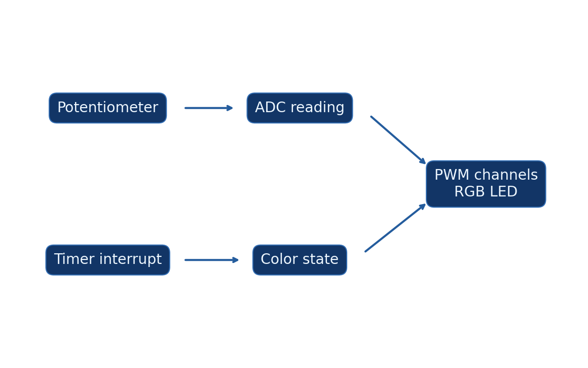

ECE 331 · Embedded C · KL25Z
RGB LED Control
Combined timer interrupts, analog input and PWM to control an RGB LED.
Color sequencing
A timer interrupt advances a six-state color sequence. Each state sets a different mix of red, green and blue through three PWM channels.
Brightness control
The KL25Z reads the potentiometer through its ADC. I scaled each PWM duty cycle by that reading so the same knob dims each color in the sequence.
